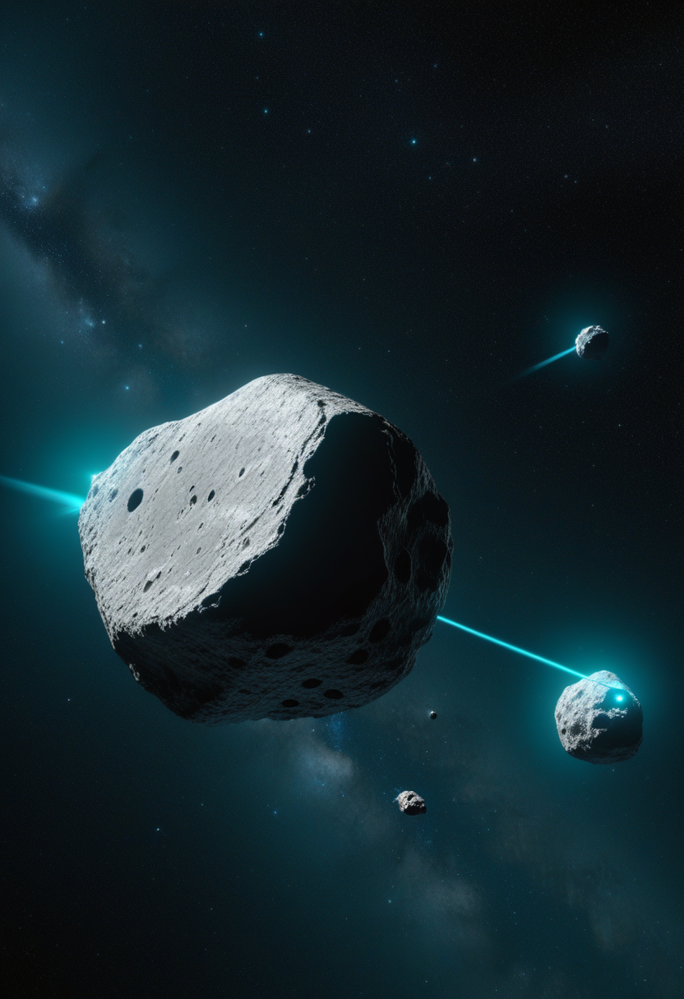
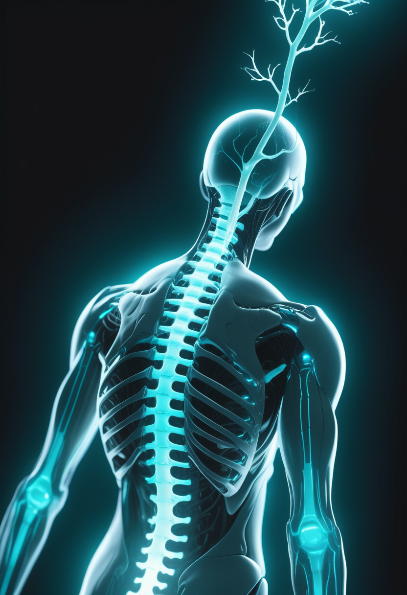
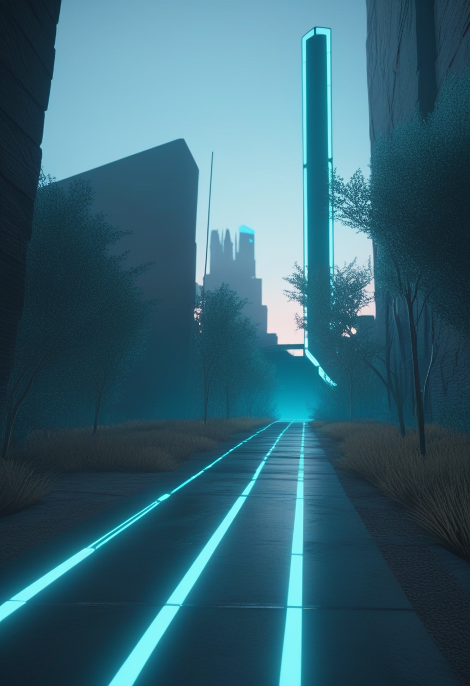
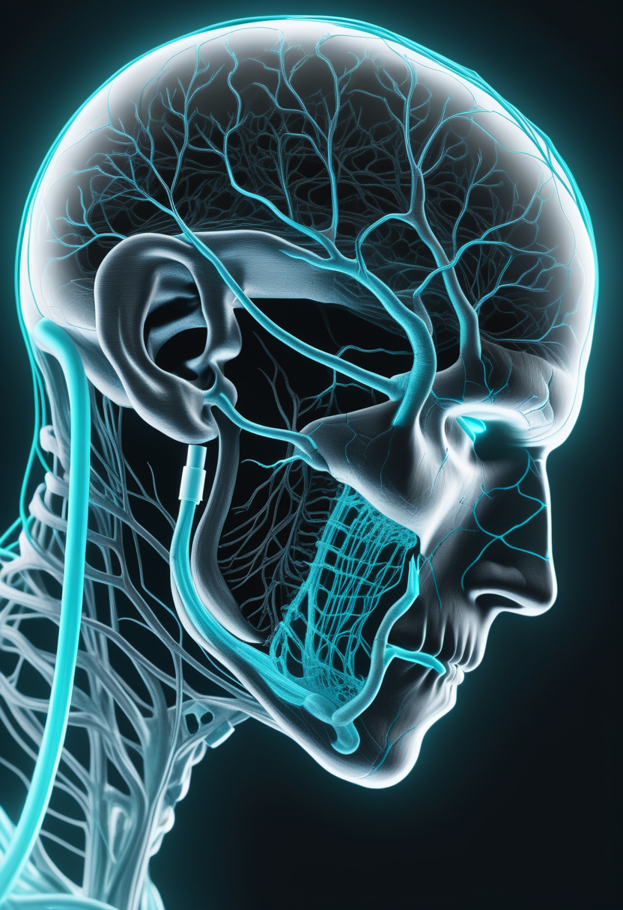
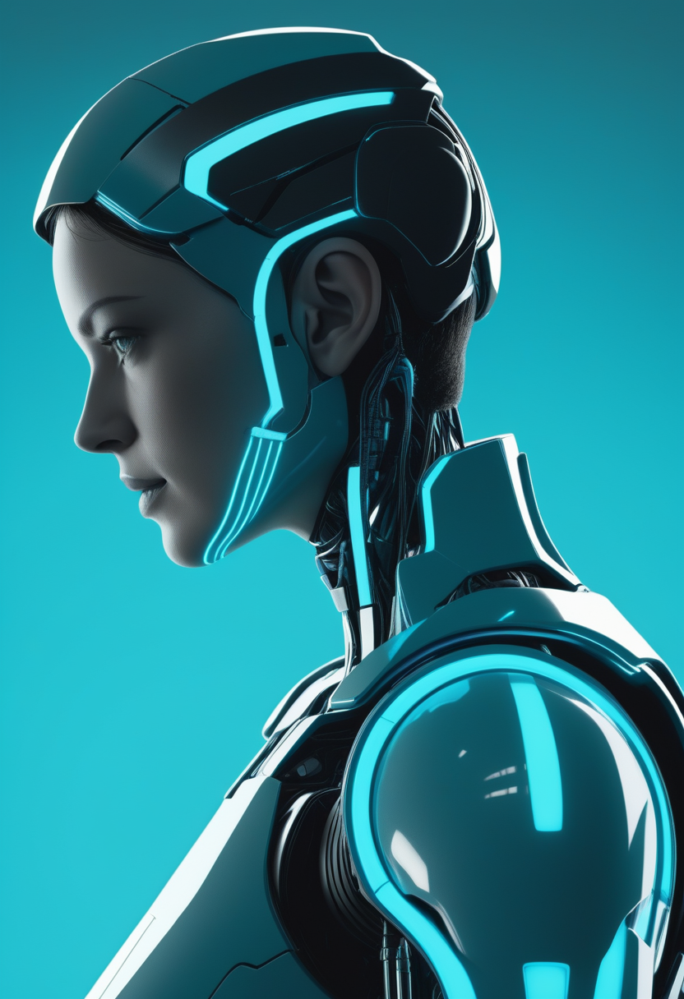
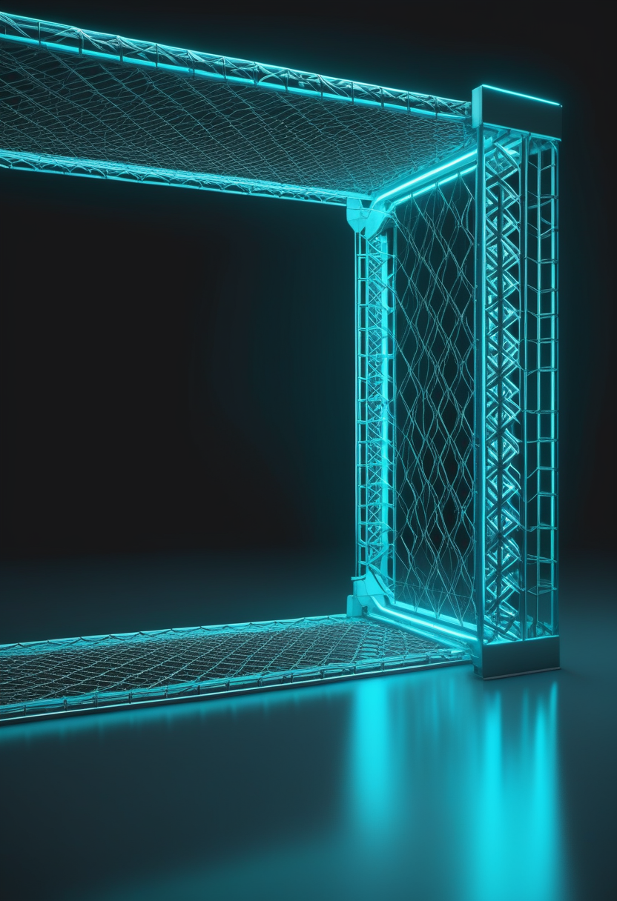
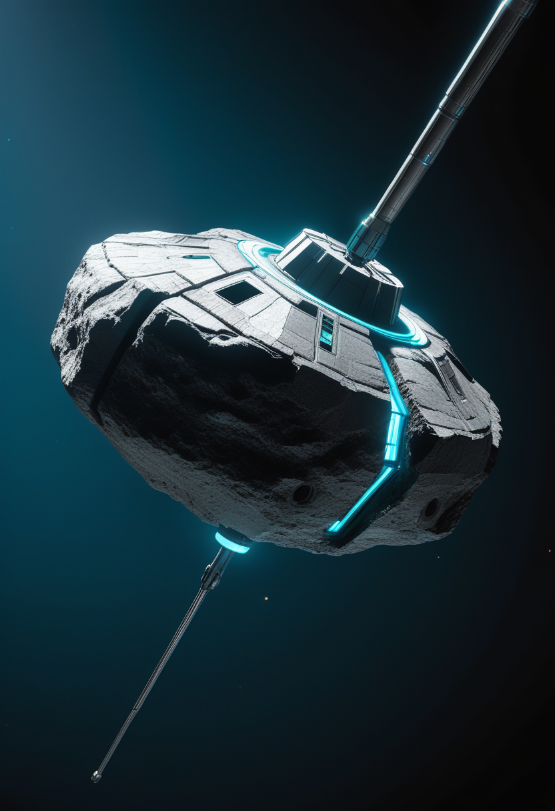
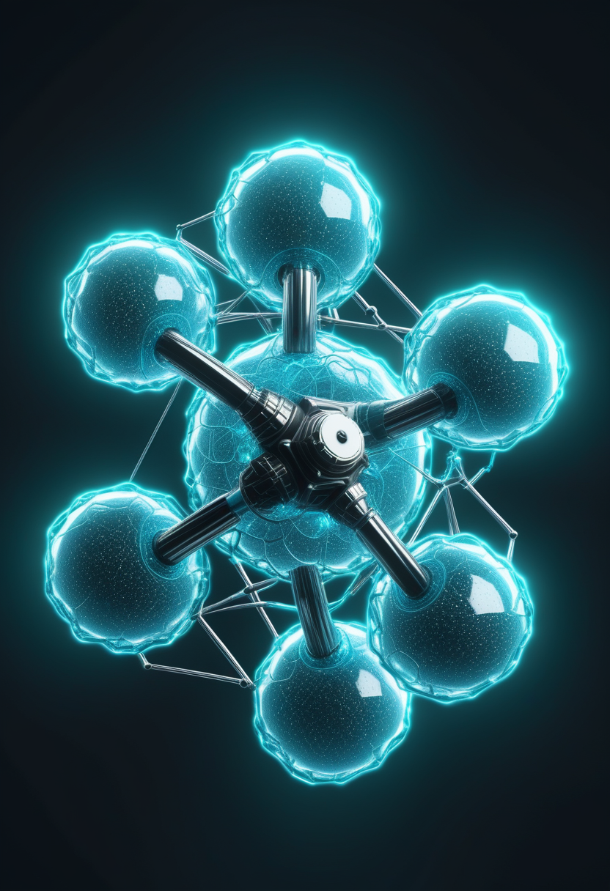

天問2号、小惑星カモオアレワに到達 ― 月起源説を試料で問い直す
中国国家航天局(CNSA)の探査機「天問2号」が6月中旬、地球の準衛星である小惑星カモオアレワ(469219 Kamoʻoalewa)に到達し、軌道観測を開始した。7月に約100gのレゴリスを採取する計画。同時期に『Nature Communications』に載った研究は、表面の分光特性がLL型コンドライトに近く、長年信じられた「月のかけら」説が誤りかもしれないと示唆した。実際の試料が地球へ届いて初めて、この論争に決着がつく。中国初のサンプルリターンが、いま佳境を迎えている。

FDA、スピンラザの高用量レジメンを正式承認
Biogenのスピンラザ(ヌシネルセン)の新しい高用量レジメンが3月30日にFDAの承認を取得。負荷投与50mg×2回(14日間隔)のあと、維持を28mg・4か月ごとに行うスケジュールで、乳児発症型(SMN2が2コピー)のDEVOTE試験のデータが根拠。安全性は従来の低用量と同等で、既存患者の切り替え手順も定義され、より少ない通院でより強い効果を狙える。

アピテグロマブ、BLA受理・FDA審査日は9月30日
Scholar Rockの筋標的薬アピテグロマブが、3月末の再提出を経てFDAに受理され、審査期限(PDUFA)は9月30日に確定。第3相TOPAZ試験で、歩行できない2型・3型のSMA患者(SMNを補う既存治療に上乗せ)の運動機能を統計的に有意に改善した、初の「筋肉を直接ねらう」療法。9月に承認されれば、治療の組み合わせ戦略が大きく変わる。

MDA 2026 ― 早く治療を始めた人ほど大きく改善
MDA 2026学術集会に出されたTOPAZの詳細解析で、アピテグロマブは治療開始が早い患者ほど運動機能の改善が大きいことが示された。歩行できない2型・3型が対象で、新生児スクリーニングによる早期診断→早期介入の意義を改めて裏づける結果。日本でも進む新生児マススクリーニングの拡大との連動が注目される。
SMNを補う薬と、筋肉そのものを支える薬 ― 二つの軸が重なり、SMAは“早く・多剤で守る”時代へ。

Synchron、全例で安全エンドポイント達成 ― 年内に本承認試験へ
Synchronは6月6日、血管内に留置するBCI「Stentrode」の可行性試験COMMANDで、6名全員が12か月の一次安全エンドポイントを達成したと発表(重篤な有害事象ゼロ、留置成功率100%)。2025年11月にまとめた2億ドルのSeries Dを元手に、FDA初の埋め込み型BCI承認(PMA)を目指す主試験(ピボタル試験)を年内に始める方針。開頭を要さない血管内アプローチの安全性が最大の強みとなる。
Neuralink、高量産体制へ ― 次世代機「Blindsight」で視覚回復を予告
Neuralinkは2026年初頭に手術のほぼ完全自動化と「高量産」体制への移行を宣言。試験参加者(Neuralnauts)は21名を超え、ALS患者が毎分40字の入力やロボットアーム制御を達成済み。次世代機「Blindsight」は視覚野への埋め込みで視覚障害の回復を目指し、英国・カナダでも並行試験が進む。商用化の現実的な見通しは2028〜2030年ごろとされる。

視線で動かす支援ロボットアーム ― 日常動作支援への応用が整理
1月公開のarXivサーベイ(2601.17404)が、眼球の動き(視線)で補助ロボットアームを操る制御手法を網羅的にまとめた。ロックトイン症候群など重度の障害がある人の食事や物体把持といった日常動作の支援が主な応用先。視線と認知負荷を同時に測って精度を高める方向が注目点で、視線入力はBCIと補い合う低侵襲の意思伝達手段として同時に育っている。
「FDA初のBCIを誰が獲るか」が現実の局面に ― そして視線入力が、その隣で静かに自由を広げる。

エボラ・ブンディブギョ型、534例超 ― 5.18億ドルの統合計画が実行段階へ
6月6日時点(WHO DON606)で、コンゴ民主共和国が確認515例・死亡91人、ウガンダが確認19例・死亡2人。合計534例・93人死亡は、ブンディブギョ型エボラとして過去最大規模。DRCの最多はイトゥリ州(487例)。5月17日のPHEIC宣言から3週間で、WHOとAfrica CDCは6月5日に5億1800万ドルの大陸統合対応計画を発動し、資金確保から実行のフェーズへと移った。

米国の麻疹、2026年の確認例が2,030件を突破
CDCの集計で、2026年の米国の麻疹確認例が2,030件を超えた。ワクチン未接種のコミュニティを中心に複数の州で感染連鎖が続き、2019年以来の速いペース。国際旅行者による持ち込みと国内の二次感染が組み合わさり、封じ込めに時間がかかっている。エボラ対応と並行し、監視体制への負荷が懸念される。
仏領ギアナのチクングニア熱、累計513件 ― 熱帯アルボウイルス警戒続く
フランス領ギアナで、2026年の累計チクングニア熱確認例が513件に達した。蚊が媒介する熱帯性アルボウイルス感染症の流行シーズンが続いており、NaTHNaCが渡航者への注意喚起を維持している。カリブ海・南米での季節的な流行パターンと合致した動向で、温暖な地域での媒介蚊対策が引き続き要となる。
ワクチンなき越境流行に、大陸規模の連帯で応える ― 複数の脅威が重なる時代を、備えで越える。

天問2号、カモオアレワ到達 ― 7月に試料採取、月起源説に挑む
中国の天問2号が6月中旬、地球の準衛星カモオアレワに到達して軌道観測フェーズに入った。2025年5月の打ち上げから約13か月の飛行を経ての着到で、7月に約100gのレゴリスを採取する計画。並行して『Nature Communications』の研究が、表面が高度に宇宙風化したLL型コンドライトに近いとして「月由来」説に疑問を呈した。試料が地球に届けば、長年の論争に物証で決着がつく。

量子コンピュータと医療 ― 『古典機への優位なし』の警鐘と、確かな前進
『Nature』の2026年の論文は、量子コンピュータが医療・生物学の分野でまだ古典計算機への明確な優位を示せていないと指摘した。一方で、量子計算を使った光感応性の抗がん剤の分子設計がコンテストで200万ドルを受賞するなど、実績も着実に積み上がる。Moderna–IBMのmRNA折りたたみ予測の協業も進行中で、2026年は『量子準備期の最終段階』と評される。
ESAユークリッド、QDR2を6月24日に公開予定
ESAのユークリッド宇宙望遠鏡が、第2回クイックデータ公開(QDR2)を6月24日に行う予定。天の川銀河の内側のバルジ領域に焦点を当て、暗黒物質・暗黒エネルギー解明に向けた銀河系構造の精密マッピングを提供する。2025年のQDR1に続く第2弾で、欧州の宇宙天文学コミュニティが広くデータにアクセスできる見通し。
小さな石が来し方を問い、量子が手のなかへ近づく ― 自然の最深部が、静かに人へ開かれていく。
Meta TRIBE v2、脳活動を予測する基盤モデルが実測スキャンを上回る
Meta FAIRが3月26日に公開したTRIBE v2は、視覚・聴覚・言語の刺激に対する脳の反応を予測する三モード(トリモーダル)の基盤モデル。ゼロショットの予測で、個々の実測fMRIスキャンを超える精度を記録し、『脳のデジタルツイン生成』の新しい基準を打ち立てた。てんかんや神経変性疾患のシミュレーション、新薬の応答予測への展開が期待される。
脳デジタルツインで「覚醒↔麻酔」の状態遷移を再現へ
脳のデジタルツインを使う研究が、覚醒と麻酔のような意識状態の移り変わりを、神経記録からリアルタイムに再構築しつつある(SingularityHub 4月報告)。最大のボトルネックは個人差のモデリングで、現状の全脳モデルは『本人の遠い従兄弟に過ぎない』と研究者は言う。脳オルガノイドを使ったデジタルツイン研究も並行して進む。
マインドアップロードの現実 ― 完全な脳エミュレーションは最短でも30〜40年先
2025年10月の『State of Brain Emulation Report』は、全脳エミュレーション(WBE)の実現を最短で30〜40年後と見積もった。現時点でヒトのニューロンの完全な計算機内再現も、意識の転送の実証もゼロ。医療向けの部分モデルは数十年内に応用が見込めるが、人格まるごとのデジタル化は技術的にも倫理的にも遠い地平にある。デジタルな自己の所有権とプライバシーが、いま倫理の主課題として浮かぶ。
脳を写し取る技術は、まず医療の現場へ ― 人格の転写よりも、部分の実用が静かに先を行く。
今日の世界は、守ることと、こえることを同時にやっていた。小さな石に来し方を問う探査機の傍らで、失われた筋肉を取り戻す薬が承認され、脳とつながる電極が初の規制判断へ近づき、越境する病に大陸規模の連帯が応える。脅威の報せの隣に、静かな前進の報せを置いておきたい。畏れることと、進むことは、たぶん同じ一つの営みなのだから。
明日への短い便り。今日も世界は、問いながら回っていました。おやすみなさい。